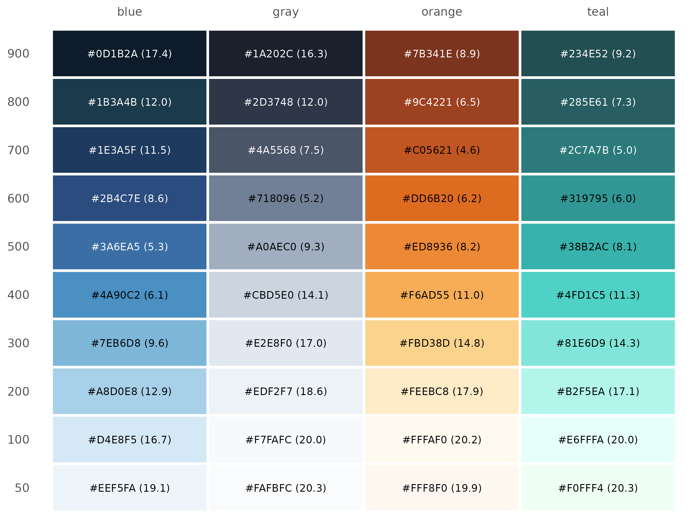
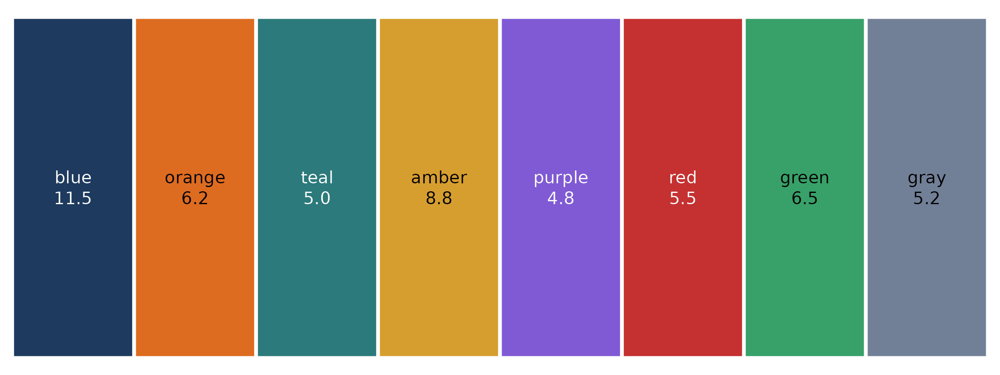
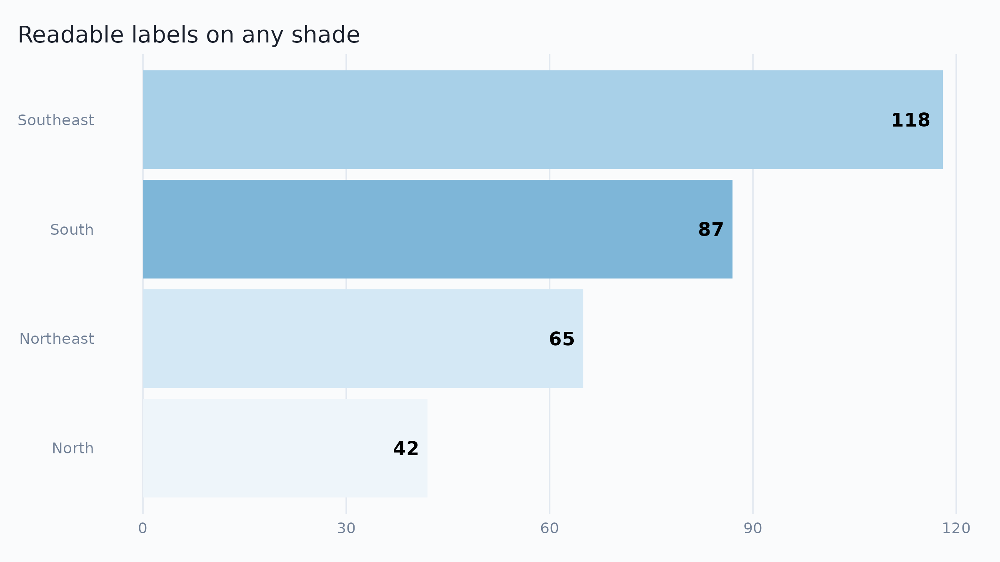

Text placed on a colored background — bar labels, gt table cells, annotation boxes — needs enough contrast to stay readable. The WCAG 2.1 guidelines quantify this as a contrast ratio between text and background, from 1 (identical colors) to 21 (black on white):
| Level | Normal text | Large text (≥ 18pt) |
|---|---|---|
| AA | ≥ 4.5 | ≥ 3.0 |
| AAA | ≥ 7.0 | ≥ 4.5 |
ekioplot provides two helpers:
-
ekio_contrast()computes the WCAG contrast ratio between two colors. -
ekio_text_on()picks the more readable text color (black or white) for a given background.
ekio_contrast("white", ekio_blue["700"])
#> [1] 11.50262
ekio_text_on(ekio_blue["700"])
#> 700
#> "white"Black or white text on the EKIO scales
The chart below shows every shade of the four EKIO color scales,
labeled in the text color that ekio_text_on() selects, with
its contrast ratio in parentheses.
scales_df <- do.call(rbind, lapply(
c("blue", "teal", "orange", "gray"),
function(scale_name) {
hex <- get(paste0("ekio_", scale_name))
data.frame(
scale = scale_name,
shade = factor(names(hex), levels = rev(names(hex))),
hex = unname(hex)
)
}
))
scales_df$text_color <- ekio_text_on(scales_df$hex)
scales_df$ratio <- ifelse(
scales_df$text_color == "white",
ekio_contrast("white", scales_df$hex),
ekio_contrast("black", scales_df$hex)
)
scales_df$label <- sprintf(
"%s (%.1f)", scales_df$hex, scales_df$ratio
)
ggplot(scales_df, aes(x = scale, y = shade, fill = hex)) +
geom_tile(color = "white", linewidth = 1) +
geom_text(aes(label = label, color = text_color), size = 3) +
scale_fill_identity() +
scale_color_identity() +
scale_x_discrete(position = "top") +
labs(x = NULL, y = NULL) +
theme_minimal(base_size = 12) +
theme(panel.grid = element_blank())
The pattern is consistent across scales: shades 500 and
darker take white text, shades 400 and lighter take
black text. When in doubt, call ekio_text_on()
instead of memorizing the cutoff.
Accent colors
The named accent colors in ekio_accent are mid-to-dark
tones, so most of them pair with white text — but not all reach AA for
normal-size text.
accents_df <- data.frame(
name = factor(names(ekio_accent), levels = names(ekio_accent)),
hex = unname(ekio_accent)
)
accents_df$text_color <- ekio_text_on(accents_df$hex)
accents_df$ratio <- ekio_contrast(accents_df$text_color, accents_df$hex)
accents_df$label <- sprintf("%s\n%.1f", accents_df$name, accents_df$ratio)
ggplot(accents_df, aes(x = name, y = 1, fill = hex)) +
geom_tile(color = "white", linewidth = 1) +
geom_text(aes(label = label, color = text_color), size = 3.5, lineheight = 1) +
scale_fill_identity() +
scale_color_identity() +
labs(x = NULL, y = NULL) +
theme_void()
A full compliance table:
accents_df$aa <- accents_df$ratio >= 4.5
accents_df$aa_large <- accents_df$ratio >= 3.0
accents_df$aaa <- accents_df$ratio >= 7.0
accents_df[, c("name", "hex", "text_color", "ratio", "aa", "aa_large", "aaa")]
#> name hex text_color ratio aa aa_large aaa
#> 1 blue #1E3A5F white 11.502620 TRUE TRUE TRUE
#> 2 orange #DD6B20 black 6.198365 TRUE TRUE FALSE
#> 3 teal #2C7A7B white 5.027628 TRUE TRUE FALSE
#> 4 amber #D69E2E black 8.789424 TRUE TRUE TRUE
#> 5 purple #805AD5 white 4.837457 TRUE TRUE FALSE
#> 6 red #C53030 white 5.469427 TRUE TRUE FALSE
#> 7 green #38A169 black 6.470082 TRUE TRUE FALSE
#> 8 gray #718096 black 5.230212 TRUE TRUE FALSEColors that pass aa_large but not aa (such
as orange and amber with white text) are fine
for large display text — big value labels, headline numbers — but should
not carry small annotations. For small text on those fills, use a dark
text color such as ekio_gray["900"]:
ekio_contrast(ekio_gray["900"], ekio_accent["amber"])
#> [1] 6.829936Using ekio_text_on() in plots
Pass the fill colors through ekio_text_on() to color
labels, so they stay readable regardless of the underlying shade:
sales <- data.frame(
region = c("North", "Northeast", "Southeast", "South"),
value = c(42, 65, 118, 87)
)
sales$fill <- ekio_pal("blue", n = 4)
ggplot(sales, aes(x = reorder(region, value), y = value, fill = fill)) +
geom_col() +
geom_text(
aes(label = value, color = ekio_text_on(fill)),
hjust = 1.3,
fontface = "bold"
) +
scale_fill_identity() +
scale_color_identity() +
coord_flip() +
labs(x = NULL, y = NULL, title = "Readable labels on any shade") +
theme_ekio(grid = "x")
Guidelines
- Default to
ekio_blue["700"](the primary brand blue) for filled elements that carry white text: it passes AAA (ratio 11.5). - Light backgrounds (
50–200shades) are for panels and subtle fills; always use dark text on them. - Don’t rely on the black/white cutoff from memory when generating
fills programmatically — compute it with
ekio_text_on(). - Contrast ratios apply to text and essential icons, not to adjacent
chart fills; for distinguishing series, palette choice (see
ekio_pal()) matters more than contrast against the background.